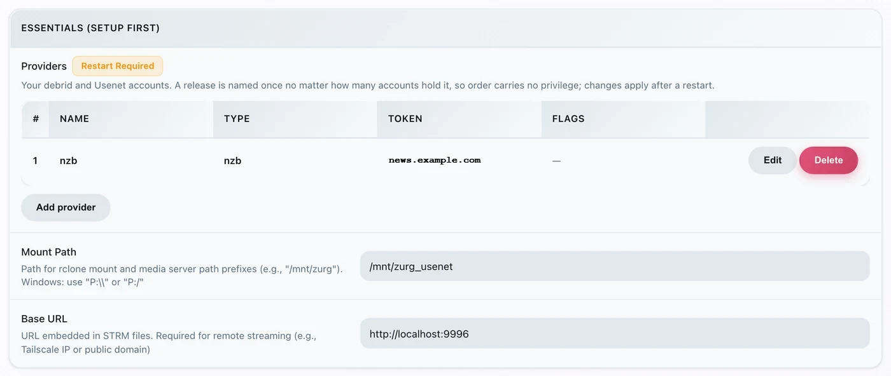
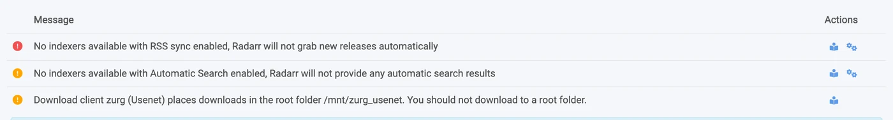
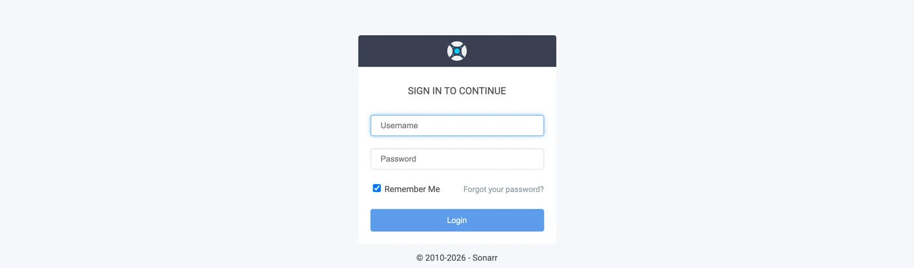
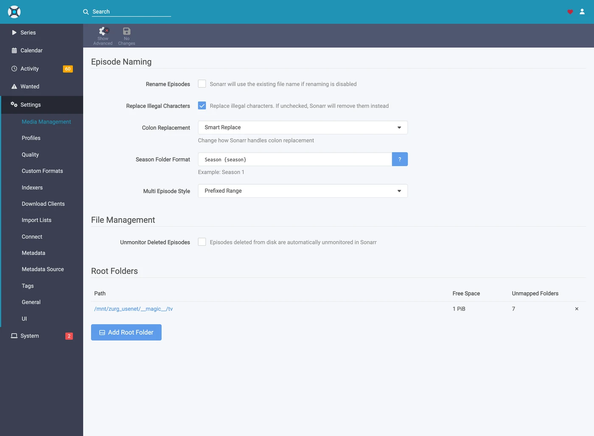

Sonarr 和 Radarr 分步指南
有三种方式可以把 Sonarr 和 Radarr 与 zurg 配合使用。选择由谁来搜索 zurg 或 *arrs。参见 选哪一种。
前两种可以同时运行。它们共用同一个 __magic__ 文件夹。
让 Sonarr 和 Radarr 指向 zurg，就能无需客户端从 Usenet 抓取。抓取过程中不会下载或解压完整的视频。NZB 和缓存仍然会占用磁盘。本页介绍 Usenet。torrent 端点使用相同的客户端并共享该文件夹。参见 Sonarr 与 Radarr 用于 torrents。
下面的所有内容都是在 zurg nightly-993-g99bcf9a4、Sonarr 4.0.19.2979 和 Radarr 6.3.0.10514 上、使用真实 Usenet 账户的正式安装中捕获的。主机名和用户名已改为 you@zurg-server。索引器名称为 my-indexer。API 密钥和库数量仅为示例。捕获的输出中其他内容均未改动。torbox_nzb 的日志行是于 2026-11-09 从 zurg 源代码中读取的，并非实时捕获。
开始之前
三件事都必须成立。缺任何一件，之后都会表现为看起来无关的问题，所以现在就检查。
- zurg 里有
nzbprovider，或者有torbox_nzb（TorBox Pro）。 没有它，就没有东西去读取端点写入的内容。每个任务都会在 30 分钟后被标记为 Failed，因为 zurg 会一直等它出现在库里，等到放弃为止。参见 Usenet；如果用的是torbox_nzb，参见 TorBox 托管的 Usenet。 magic.enabled是true。 没有它，completed 目录就不存在，每次导入都会失败。参见__magic__。- *arr 能在 zurg 报告的路径上看到挂载。 如果 Sonarr 运行在容器里，先看
第 8 步 ，再做任何配置。如果它是装在同一台机器上的普通应用，就能看到 zurg 挂载的位置，但每个系统各有一个需要注意的地方：
前两项直接在配置文件里检查，就在 zurg 的工作目录中。在 Windows 上，改用记事本打开 config.yml。
$ grep -A6 '^providers:' config.yml
providers:
- type: nzb
nntp:
host: news.example.com
port: 563
tls: true
username: <redacted>
password: <redacted>
$ grep -A4 '^magic:' config.yml
magic:
enabled: true
allow_delete: false
sidecar_max_mb: 32
sidecar_budget_mb: 2048allow_delete: false 是安全的默认值，不会影响导入。在 __magic__ 里删除条目只会隐藏它，并不会从你的账户中删除内容。
1. 打开端点
两种方式效果相同。两者都会写入 config.yml，并且都需要重启：提供 __magic__ 的路由和 SABnzbd 端点只会在 zurg 启动时注册一次。
方案 A — 仪表盘
打开 zurg 的仪表盘，点击 Config，然后滚动到 __magic__ & Download Clients。打开 Serve __magic__ 和 SABnzbd Endpoint，再把 SABnzbd Categories 设为 tv, movies。

Config 是设置所在的位置；Magic 是你之后查看抓取内容到达情况的地方。

除非你的 *arr 挂载 zurg 的路径与 zurg 自身不同，否则把 SABnzbd Completed Directory 留空，具体见
方案 B — config.yml
手动添加该配置块，然后重启 zurg。
magic:
enabled: true
sabnzbd:
enabled: true
api_key: "" # empty = zurg generates one and keeps it
categories: [tv, movies]
complete_dir: "" # empty = <mount_path>/__magic__/__all__分类并不是文件夹。 它们都指向同一个位置：任务的文件夹就是该发布资源自己在 __magic__/__all__ 下的文件夹。这个列表只是为了让 Sonarr 和 Radarr 不再因为找不到某个分类而发出警告。如果 Sonarr 的分类是 tv，那么 tv 就必须在这个列表里。
重启 zurg，然后确认 provider 已经生效：

端点只需要一行 nzb 或 torbox_nzb。
2. 找到 API key
API key 是这个端点的全部认证，所以只需要正确设置一次，并且不要把它贴到任何公开的地方。
如果你把 api_key 留空，zurg 会在第一次启动时自动生成一个，并写入 data/sabnzbd-apikey：
$ cat data/sabnzbd-apikey
0123456789abcdef0123456789abcdef
这只是示例密钥，你的会不一样。这个文件在重启后会保留，所以密钥一旦生成就是固定的。
如果你自己设置了 api_key，它就写在 config.yml 里，不会生成任何文件。仪表盘会告诉你属于哪种情况：在第 1 步那个代码块的底部，它会显示 pinned in config.yml under sabnzbd.api_key，或者 generated and kept in data/sabnzbd-apikey 之一。
这个端点不在 zurg 的基本认证范围内。 Sonarr 和 Radarr 从来不会向下载客户端发送基本认证，而且它们的 HTTP 层会把 401 变成一句“无法连接”，并且没有任何可操作的提示。所以 zurg 特意把 /api 排除在外。API key 就是唯一的防线。请像对待 zurg 的其他部分一样对待这个端口：只在可信网络中使用，或者放在其他防护措施之后。
3. 验证它能正常响应
$ SAB=0123456789abcdef0123456789abcdef
$ ZURG=192.168.88.245:9996
$ curl -s "http://$ZURG/api?mode=version&apikey=$SAB&output=json"
{"version":"4.5.1"}
$ curl -s "http://$ZURG/api?mode=get_config&apikey=$SAB&output=json" \
| jq '.config.misc.complete_dir, [.config.categories[].name]'
"/mnt/zurg_usenet/__magic__/__all__"
[ "*", "tv", "movies" ]在 PowerShell 中操作。输入 curl.exe，而不是 curl：Windows PowerShell 里的 curl 是另一个命令。
PS> $SAB = "0123456789abcdef0123456789abcdef"
PS> $ZURG = "192.168.88.245:9996"
PS> curl.exe -s "http://$ZURG/api?mode=version&apikey=$SAB&output=json"
{"version":"4.5.1"}
PS> (Invoke-RestMethod "http://$ZURG/api?mode=get_config&apikey=$SAB&output=json").config.misc.complete_dir
Z:/__magic__/__all__complete_dir 是 zurg 交给客户端的路径，现在就确认一下 它们 能不能打开这个路径。
然后确认错误的 key 确实会被拒绝（在 Windows 上，用同样的 URL 配合 curl.exe）：
$ curl -s "http://$ZURG/api?mode=queue&apikey=wrongkey&output=json"
{"status":false,"error":"API Key Incorrect"}
$ curl -s "http://$ZURG/api?mode=queue&output=json"
{"status":false,"error":"API Key Required"}mode=version 不是认证测试。 即使 key 错误，它也会返回 {"version":"4.5.1"}。真正的 SABnzbd 就是这样运行的，zurg 也照做了。如果你真正想测试的是 key，请使用 mode=queue 或 mode=get_config。
两种 URL 形式都可以用，所以在客户端的 URL Base 字段里填哪一种都行：
如果 /api 返回普通的 404，说明 sabnzbd.enabled 仍为 false，或者你修改后还没有重启 zurg。
4. 创建根文件夹
先创建这些文件夹，再添加它们，因为 *arr 的 Add Root Folder 对话框会浏览实时文件系统，不会列出不存在的文件夹。
$ mkdir -p /mnt/zurg_usenet/__magic__/tv /mnt/zurg_usenet/__magic__/movies
$ ls -d /mnt/zurg_usenet/__magic__/tv /mnt/zurg_usenet/__magic__/movies
/mnt/zurg_usenet/__magic__/movies
/mnt/zurg_usenet/__magic__/tvPS> New-Item -ItemType Directory -Force Z:\__magic__\tv, Z:\__magic__\movies或者在资源管理器中创建这两个文件夹。
将 /mnt/zurg_usenet 替换为你自己的 mount_path。如果不设置，默认值在 Linux 上是 /mnt/zurg，在 macOS 上是 /Volumes/Zurg，在 Windows 上是 Z:。文件夹名称由你自行决定；tv 和 movies 只是与分类对应。
根文件夹应放在已完成目录旁边，而不是放在它上面，也不是它的上级目录。 zurg 会把 __magic__/__all__ 提供给客户端，它就是 __all__ 列出的你的整个媒体库。你的根文件夹应紧挨着它，位于 __magic__/tv 和 __magic__/movies。不要设为 __magic__/__all__，也不要设为 __magic__ 本身，更不要设为 /mnt/zurg_usenet。两个客户端在根文件夹就是下载客户端的输出文件夹时都会发出健康检查警告；Radarr 在根文件夹包含输出文件夹时也会发出警告。同级文件夹两者都不会触发警告；这样，手动导入指向已完成目录时，只需查看一个发布版本，而不是整个媒体库。
下面是配置错误时的样子。两张都是真实截图，来自这两个客户端。它们是在已完成目录迁移到 __magic__/__all__ 之前拍摄的，所以截图中的路径比你的路径高一级，但它们展示的是同样的两条规则：

Sonarr 中把已完成目录本身添加为根文件夹。因为根文件夹就是输出文件夹，所以它发出警告。

Radarr 中添加了 /mnt/zurg_usenet。它对上级目录也会发出警告，Sonarr 则不会。把根文件夹移到已完成目录旁边，两个警告都会消失。
5. 在 Sonarr 中添加客户端
全新的 Sonarr 会把所有页面都挡在首次运行的设置界面后面。选择 Forms (Login Page)，设置用户名和密码，然后点击 Save。

在 Authentication Method 设为 None 以外的选项之前，它不会让你继续。

点击 Save 之后，你会被登出一次，并进入登录页面。

Settings → Download Clients
前往 Settings → Download Clients。全新安装后，这里只有一个 + 卡片。

点击 "Download Clients" 下面的 +，别点下面 "Remote Path Mappings" 那个。
从 Usenet 这一列里选 SABnzbd。

zurg 模拟的是 SABnzbd，所以这个列表里别的选项都用不了。
弹窗会打开 SABnzbd 自带的默认值，也就是 localhost、端口 8080，没有 key。

每个字段该填什么

图中显示的 API key 只是示例，请粘贴你自己的。
在 Docker 中，"localhost" 和主机名都会出错。 在容器内部，localhost 指的是容器本身；而机器自己的主机名通常会解析为 127.0.1.1，这同样是容器本身。请使用主机的局域网或 Tailscale IP，不要用 localhost，也不要用单纯的主机名，即使它们在你的 shell 里能正常工作。
点击 Test。绿色的勾表示客户端的四项检查全部通过：版本、API key、全局配置和分类。

现在点击 Save。

6. 在 Sonarr 中添加根文件夹
前往 Settings → Media Management，然后滚动到底部。

点击 Add Root Folder。会打开一个文件浏览器，显示的是 Sonarr 的文件系统。在 Docker 中，这是容器内的文件系统。

在顶部的输入框中输入路径。如果 Sonarr 确实能看到这个挂载，你在输入时就会看到 __magic__ 里的内容，比如里面的 __all__（包含所有发布资源），以及你在它旁边建的其他文件夹。这是确认绑定挂载是否正确的最快方法。

如果这里是空的或者报错，先停下来，把挂载修好再继续。

把路径补全为 __magic__/tv（Windows 上为 Z:\__magic__\tv），然后点击 Ok。

Free Space 显示一个合理的数字，说明 Sonarr 能读取该挂载的信息。Unmapped Folders 则会统计这里已经存在的发布资源数量。
7. 在 Radarr 中做同样的操作
和上面一样，只改两个值：分类是 movies，根文件夹是 __magic__/movies。

Radarr 首次运行的方式相同：先设置 Forms auth，然后登录。

依次点击 Settings → Download Clients → +，然后在 Usenet 下选择 SABnzbd。

主机、端口、密钥都一样。只有 Category 不同：填 movies，不要填 tv。

点 Test，看到绿色对勾后，再点 Save。

然后依次点击 Settings → Media Management → Root Folders → Add Root Folder，添加 /mnt/zurg_usenet/__magic__/movies。
一个 zurg，两个客户端，一个队列。 zurg 的队列和历史记录只按分类过滤，没有别的条件。两个 Sonarr 都用 tv 的话，会看到彼此的任务；Sonarr 用 tv、Radarr 用 movies 则不会。每个分类只配一个客户端，就不会遇到这个问题。
8. 如果你的 *arr 运行在 Docker 中
この步骤适用于 Linux 主机上的 Docker。Docker Desktop 在 macOS 和 Windows 上会把容器运行在虚拟机里。下面的 rslave 绑定依赖 Linux 的挂载传播（参见 Docker 设置），而在这些系统上把 zurg 的挂载交给容器使用，目前还没有经过测试。在 macOS 和 Windows 上，请按照
三个独立的问题。第二个问题每次导入都会多消耗一次下载。第三个问题要等到 zurg 第一次重启时才会显现。
zurg 报告的路径必须是客户端能够打开的路径
如果容器挂载媒体库的位置和 zurg 的不一样，每次导入都会失败，并报 download doesn't contain intermediate path，或者远程路径健康检查失败。两种方法都可以修复：
- 设置
sabnzbd.complete_dir，填客户端看到的路径。如果只用一个客户端，或者几个客户端挂载位置一致，这样最简单。 - 在 *arr 中添加远程路径映射。当不同客户端的挂载位置不一样时，用这种方法。
sabnzbd:
complete_dir: "/data/zurg/__magic__/__all__" # what the *arr sees, not what zurg sees用第二种方法的话，进入 Settings → Download Clients，点击 Remote Path Mappings 下面的 +。是页面下方那个，不是第 5 步用的那个。

Host 必须和你在下载客户端里填的主机名完全一致。Remote Path 是 zurg 报告的路径；Local Path 是客户端看到的路径。
为下载文件夹和根文件夹使用同一个卷
从 __magic__/__all__ 导入到 __magic__/tv 是免费的，因为这只是重命名。重命名只能在同一个挂载内进行。如果你给容器两个文件夹，分别作为两个卷挂载，它会把它们看成两个文件系统。两者底层其实都是 zurg 的挂载，但这依然没用。
volumes: # do not do this
- /mnt/zurg_usenet/__magic__/__all__:/downloads
- /mnt/zurg_usenet/__magic__/tv:/tv内核会在容器里拒绝这次重命名。Sonarr 和 Radarr 随后会复制文件、删除原文件，而且不会提示你。每次导入都会从你的账户把整个资源下载一遍，写入 zurg 的磁盘。导入虽然会成功，只是很慢。一个 1.46 GB 的剧集这样导入花了 50 秒，流量达到 2.9 GB。如果只用一个卷，只花了 1 秒，也没有读取任何数据。
给容器一个包含 zurg 整个挂载的卷。通过它访问下载文件夹和根文件夹。下一节的绑定正是这样做的。然后用远程路径映射或 complete_dir 把下载客户端指向同一卷里的 __all__。
手动导入时如果选择 Hardlink/Copy Files，同样会复制。请选择 Move Files。
挂载父目录，而不是挂载点
这是最耗费一下午的问题，也是上面那一节特别要求的一个卷。重启 zurg 会卸载 /mnt/zurg_usenet，然后重新挂载。绑定了挂载点本身的容器会保留启动时的 fuse 连接，而这个连接现在已经失效。之后每次读取都会返回 Socket not connected。两个客户端在抓取前都会检查根目录的可用空间，所以每个 release 都会被悄悄拒绝：
FreeSpaceSpecification: Socket not connected两个客户端都不会提示挂载已经失效。容器里仍然能看到这个文件夹，而且直接把交互式抓取推给客户端时，它还能正常工作。表现出来就像是某个 *arr 悄无声息地停止了搜索。
请改为使用 rslave 绑定父目录，这样重新挂载时，容器会以子挂载事件的形式跟随变化：
volumes:
- type: bind
source: /mnt # the parent, not /mnt/zurg_usenet
target: /mnt
bind:
propagation: rslave每次重启 zurg 后，都检查一下容器。你应该看到一个大小数值，而不是错误：
$ docker exec radarr df -h /mnt/zurg_usenet
Filesystem Size Used Avail Use% Mounted on
zurg{PGSq4}: 1.0P 0 1.0P 0% /mnt/zurg_usenet那个 PB 级的数字表示 zurg 报告的是一个虚拟文件系统，而不是真实磁盘，这是正常的。正是它让 *arr 的可用空间检查得以通过。
9. 跟踪一次抓取的完整过程
添加一项内容，手动抓取它，然后全程跟踪它的进度。下面的所有内容，都是通过上面的设置完成的一次真实抓取。
抓取
打开一部电影（或一集剧集），点击 Interactive Search，然后选择一个版本。

Source 列显示 nzb，这就是 zurg 能够处理的协议。
点击该行末尾的循环箭头按钮即可抓取。如果版本没有完全匹配，客户端会先要求你确认映射关系：

当客户端需要你确认该版本是什么时，会出现 Override and Grab。检查映射无误后，点击 Grab Release。正常的自动抓取不会出现这个对话框。
它会进入队列

Activity → Queue（活动 → 队列）中抓取后马上显示的界面。注意进度条：它是满的，Time Left 显示为一个破折号。这里没有需要测量的下载，任务要么在排队，要么已完成，中间没有过渡状态。这里其他的几行属于第二个指向同一个 zurg、使用同一分类的 Radarr ——见第 7 步的说明。
zurg 写入 NZB 并读取它
Aug 25 14:44:03 zurg-server zurg[3034965]: INFO nzb Loaded NZB
Last.Week.Tonight.with.John.Oliver.S13E22.480p.WEB.x264-RMTeam.nzb: 4 files
Aug 25 14:50:28 zurg-server zurg[3034965]: INFO nzb Loaded NZB
Untold.The.Testimony.of.Vince.Young.2026.1080p.NF.WEB-DL.DD+5.1.Atmos.H.264-playWEB.nzb: 9 filesLoaded NZB … : N files 是表示 NZB 解析成功的那一行日志。如果某个任务在 30 分钟后被标记为 Failed（zurg 等待它出现在库中而放弃时），通常就是缺了这一行。
导入过程

Activity → History。两条事件，相隔几秒：先是 Grabbed，然后是 Movie Imported。

Status: Downloaded，Size 4.7 GiB，但其实什么都没有下载。
确认文件是真实的
导入操作已把文件移入根文件夹。请读取它的首尾两端,并用 ffprobe 检查它是什么:
如果你的 shell 找不到 ffprobe,请使用 ~/zurg/bin/ffprobe:如果之前没有安装,安装程序会把它自己的副本放在那里。
$ ls -la "/mnt/zurg_usenet/__magic__/movies/Untold - The Testimony of Vince Young (2026)/"
-rw-r--r-- 1 you you 4920958828 Aug 25 14:53 Untold.The.Testimony…playWEB.mkv
$ dd if="$F" bs=1M count=1 >/dev/null
1048576 bytes (1.0 MB, 1.0 MiB) copied, 0.0429446 s, 24.4 MB/s
$ ffprobe -v error -show_entries format=duration,size,format_name \
-of default=noprint_wrappers=1 "$F"
format_name=matroska,webm
duration=4709.440000
size=4920958828在 PowerShell 中,从 zurg 的文件夹运行。除非你的 PATH 中已经有 ffprobe,否则安装程序会把 bin\ffprobe.exe 放在那里;如果已有,请直接输入 ffprobe:
PS> $F = Get-Item "Z:\__magic__\movies\Untold - The Testimony of Vince Young (2026)\*.mkv"
PS> $F.Length
4920958828
PS> bin\ffprobe.exe -v error -show_entries format=duration,size,format_name -of default=noprint_wrappers=1 $F.FullName
format_name=matroska,webm
duration=4709.440000
size=4920958828这是一个 78 分钟的 Matroska 文件,按需从 Usenet 文章中流式读取。字节是在有东西读取它们时才到达的,而不是在 *arr 导入时到达。
10. 手动添加一个发布版本
有时候 Sonarr 或 Radarr 就是抓不到你想要的版本。可能是它搜索的索引器里没有这个资源，也可能是质量配置或自定义格式把它筛掉了。这时你可以自己把 NZB 交给 zurg，并指定应该导入它的那个应用的分类。该应用会像自己抓取的一样把它导入。
如果资源在应用会搜索的索引器上，先试试应用本身。Interactive Search 也会列出被拒绝的资源。抓取其中一个，它会和其他抓取一样发送给 zurg。Radarr 就抓到过一个 IMAX 版本。它的配置文件因为必需的自定义格式得分为 0 而拒绝了它，但最后还是被它导入了。
$ SAB=0123456789abcdef0123456789abcdef
$ ZURG=192.168.88.245:9996
# an NZB file you already have (the upload field is called name, as in SABnzbd)
$ curl -s "http://$ZURG/api?mode=addfile&apikey=$SAB&cat=movies" \
-F 'name=@Movie.Title.2024.1080p.WEB-DL.nzb'
{"status":true,"nzo_ids":["SABnzbd_nzo_…"]}
# or a link to one, which zurg downloads itself
$ curl -s -G "http://$ZURG/api" \
--data-urlencode mode=addurl --data-urlencode "apikey=$SAB" --data-urlencode cat=movies \
--data-urlencode 'name=https://indexer.example/getnzb/<id>?r=<indexer-key>' \
--data-urlencode nzbname=Movie.Title.2024.1080p.WEB-DL
{"status":true,"nzo_ids":["SABnzbd_nzo_…"]}在 PowerShell 中使用 curl.exe，而不是 curl。两者都会返回上面那样的 {"status":true,"nzo_ids":[…]}。
$SAB = "0123456789abcdef0123456789abcdef"
$ZURG = "192.168.88.245:9996"
# an NZB file you already have (the upload field is called name, as in SABnzbd)
curl.exe -s "http://$ZURG/api?mode=addfile&apikey=$SAB&cat=movies" -F "name=@Movie.Title.2024.1080p.WEB-DL.nzb"
# or a link to one, which zurg downloads itself
curl.exe -s -G "http://$ZURG/api" `
--data-urlencode mode=addurl --data-urlencode "apikey=$SAB" --data-urlencode cat=movies `
--data-urlencode "name=https://indexer.example/getnzb/<id>?r=<indexer-key>" `
--data-urlencode nzbname=Movie.Title.2024.1080p.WEB-DL--data-urlencode 会保留链接本身的 ? 和 &，让它们留在 name 里。任务会在应用下一次检查时（一分钟之内）出现在它的队列中。
之后会发生什么，取决于以下五点。
- 电影或剧集必须已经在该应用里。 它只会导入能和它管理的内容匹配上的文件。
- 名字要能说明它是什么。 任务会使用 NZB 的文件名，如果你传了
nzbname，则使用它。没有nzbname时，addurl会使用索引器提供的文件名。名字里要带上年份。 - 分类决定交给哪个应用。
cat=movies会交给下载客户端用movies的那个 Radarr。每个应用只看自己的分类。 - 质量配置不会阻止它，但你已有的文件可能会。 Radarr 在导入时既不检查允许的质量，也不检查最低自定义格式分数。它曾把一个得分为 0 的 720p BluRay 导入到只允许 2160p、且要求分数为 100 的配置里。它还把一个 1080p WEBRip 导入到只允许 720p 的电影里。之后它又用一个 1080p BluRay 作为升级替换了它，并删除了 WEBRip。再之后添加的一个 WEB-DL 则在 Activity 中停了下来，显示为 Not an upgrade for existing movie file。Activity → Queue → Manual Import 仍然可以把它导入，并替换原文件。
- 失败要你自己清理。 应用从不会拉黑或删除它没有抓取的下载。有一个资源的文章已经从新闻服务器上过期，zurg 把它返回为 Failed，结果它一直留在 Radarr 的队列里，显示为 Download has failed wasn't grabbed by Radarr, skipping automatic download handling。这时请把它从队列里移除，再挑选另一个资源。
以上结果是 2026-10-10 在 Radarr 6.3 上测得的，测试同时使用了 addfile 和 addurl，还包括一个要求由资源名构成的自定义格式的配置。每次导入都是重命名到 __magic__/movies 中，没有复制任何文件。Sonarr 没有测试。
感谢 Discord 上的 .telmen 询问如何用 Usenet 做到这一点。
从 zurg 端观看
zurg 的 /magic/ 页面会列出端点曾经收到过的每一个 NZB。Sonarr 和 Radarr 会删除它们抓取过的任务，而记录会在之后保留一周，这样轮询和删除恰好同时发生时，两次返回的结果也一致。如果某个 Failed 或 Stuck（排队超过一小时）的任务已经没有客户端会再删除它，比如你停止把 zurg 当作它们的下载客户端之后，可以按住它的 Clear 按钮清除。清除时会删除它的 NZB，除非某次导入仍在使用它。

Placements 是客户端移动过的文件；tombstones 是它们之后删除的任务文件夹。如果某个客户端是复制而不是移动，页面会显示一个红色的 Imports that were copies 表格。zurg 会把这些复制件转回 placements 并删除它们，但每一个都还是完整下载过一次，所以请检查一下卷的设置。

State 决定了一切。Queued 表示 zurg 还没有处理完这个版本，可能是因为库还没列出它、文件大小还没稳定，或者文章还没检查完；Completed 表示可以导入了；Release 则是客户端导入时所用的文件夹名。
Release 这一列是每次轮询时从库里实时读取的，并不存储。在 zurg 的仪表盘里重命名版本、让修复重建它，或者因为两个版本重名而让 zurg 加上后缀，任务都会跟着它走。
哪些可用，哪些不行
可以正常工作的部分：
- 连接测试，四项检查全部通过，两个客户端都是如此。
- 抓取、队列、历史记录、按重命名导入，以及导入后的清理。
- 重新抓取同一个发布版本。之后每次抓取都会获得自己的 job id，因此客户端会按这次抓取来处理，而不是复用旧任务的结果。底层的发布版本仍然是同一个。如果重新抓取的发布版本已被之前的导入清空，则会报告 Failed。它在
__magic__/__all__下的文件夹里已经没有可导入的内容，Failed 会让客户端把它加入黑名单并换一个。执行清空操作的那次抓取会一直报告 Completed，直到客户端将其删除。 - 从队列中移除任务，可以选择是否同时删除 NZB。
mode=addurl，供人工或自动化脚本传入 URL 而非上传文件时使用。两个 *arr 都不使用它。
不支持的部分：
- 没有进度。 任务只有排队中或已完成两种状态，中间没有百分比，因为没有可以测量的下载过程。队列会显示 NZB 声明的大小，这样该行就不会是空白的。
- 没有暂停、恢复、限速、优先级或后处理脚本。 SABnzbd 都有这些功能，但 zurg 没有可供它们作用的下载过程。
- 对已完成任务从历史记录中删除时，
del_files会被忽略。（对于 Failed 任务，如果没有任何内容从中导入，则会删除 NZB。）客户端的意思是“任务文件夹归你了”，但它刚导入的文件仍然是从该 NZB 提供的。客户端想让其消失的文件夹确实没了，是它自己通过挂载点删除的。 - Basic 认证无法保护此端点。 API 密钥是唯一的访问关卡。
失败信号。 如果发布版本中没有任何可导入的内容，会报告为 Failed，两个客户端都会将其加入黑名单并抓取替代版本。这包括：所有文件都损坏、被删除或被过滤掉的发布版本；只包含 .par2、.sfv 及附属文件的发布版本；每个文件都是无法播放格式的发布版本，混淆过的帖子把 RAR 分卷命名为 .z001….z133，就是这种情况；以及已打开检查过、发现不含媒体的压缩包。RAR 分卷属于内容而非辅助文件：zurg 会直接从中串流视频。如果某个发布版本确实包含 zurg 没有对应扩展名的文件，请扩展 addl_playable_extensions，而不是把它加入黑名单。
任务报告完成前会检查文章。 zurg 会等到库列出该发布版本且其文件大小稳定后，再向新闻服务器询问每个内容文件开头和结尾的文章，即前十六篇和最后一篇。它还会下载每个文件的第一篇文章。总共最多六十四篇，如果发布版本只有少量文件，则会再加上几篇。有些新闻服务器在内容被下架后仍会声称文章存在，只有下载才能发现这一点。下载的文章还能显示它是否属于此帖子，而不是另一次上传。在得到结果之前，任务保持 Queued。样本未覆盖到的损坏不会在这里被发现，而会在读取到该部分时出现。文章已丢失的发布版本会先尝试 PAR2 修复，修复运行后再次检查。修复完整的会继续处理。仍缺少文章或无法修复的，会报告为 Failed 并附上缺失数量。这属于下载失败，也是客户端会据此行动的失败类型：它们会将其加入黑名单，并在无人值守的情况下抓取替代版本，而不是导入一个无法播放的文件。使用 torbox_nzb 时，没有新闻服务器，也没有文章检查：抓取是否成功取决于 TorBox 是否已获取该 NZB。
无法完成的检查不会一直等下去。 有时检查根本无法完成，例如连接池不可用、账户被限流，或检查超时。这不是一个结果。任务保持 Queued，并在一分钟后再次检查。zurg 会记录任务上的尝试次数，因此重启不会丢失计数。连续三十次失败且跨度至少三小时后，任务会以 Failed 状态移入历史记录。消息中包含次数、时间跨度以及最后一次错误。纯粹的拒绝性故障会在一小时内达到三十次，但不会因此让整个队列失败。
离开库的发布版本会让其任务失败。 发布版本可能从仪表板中被删除，其 NZB 可能从监视目录中被移除，或者被所有账户丢弃。其任务会保持 Queued 十五分钟，然后以 Failed 状态移入历史记录。客户端会将其加入黑名单并抓取另一个版本。设置这段等待时间是为了应对重启。库在加载时会暂时取消列出所有发布版本，这不应被视为删除。zurg 启动后的头十五分钟内，不会因为这一理由导致任何任务失败。库从未列出过其发布版本的任务不受影响，因为它仍在到达中。
故障排除
还是没解决？请到 Discord 上的 zurg-support 论坛提问。获取帮助里说明了应该提供哪些信息。